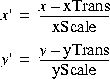
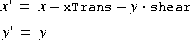
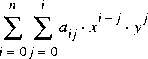
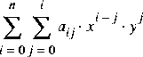
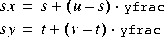
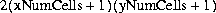
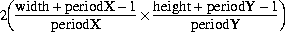
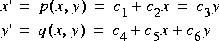

Programming in Java Advanced Imaging
Programming in Java Advanced Imaging
C H A P T E R 8 8 |
|
Geometric Image Manipulation |
THIS chapter describes the basics of JAI's geometric image manipulation functions. The geometric image manipulation operators are all part of the
javax.media.operatorpackage.
8.1
The JAI geometric image manipulation functions are:Introduction
- Geometric transformation (
Translate,Scale,Rotate, andAffine)
- Perspective transformation (
PerspectiveTransform)
- Transposing (
Transpose)
- Shearing (
Shear)Most of these geometric functions require an interpolation argument, so this chapter begins with a discussion of interpolation.
- Warping (
Warp,WarpAffine,WarpPerspective,WarpPolynomial,WarpGeneralPolynomial,WarpQuadratic, andWarpOpImage)
8.2
Several geometric image operations, such asAffine,Rotate,Scale,Shear,Translate, andWarp, use a geometric transformation to compute the coordinate of a source image point for each destination image pixel. In most cases, the destination pixel does not lie at a source pixel location, but rather lands somewhere between neighboring pixels. The estimated value of each pixel is set in a process called interpolation or image resampling.Resampling is the action of computing a pixel value at a possibly non-integral position of an image. The image defines pixel values at integer lattice points, and it is up to the resampler to produce a reasonable value for positions not falling on the lattice. A number of techniques are used in practice, the most common being the following:
- Nearest-neighbor, which simply takes the value of the closest lattice point
- Bilinear, which interpolates linearly between the four closest lattice points
The area over which a resampling function needs to be computed is referred to as its support; thus the standard resampling functions have supports of 1, 4, and 16 pixels respectively. Mathematically, the ideal resampling function for a band-limited image (one containing no energy above a given frequency) is the sinc function, equal to sin(x)/x. This has practical limitations, in particular its infinite support, which lead to the use of the standard approximations described above.
- Bicubic, which applies a piecewise polynomial function to a 4 x 4 neighborhood of nearby points
In interpolation, each pixel in a destination image is located with integer coordinates at a distinct point D in the image plane. The geometric transform T identifies each destination pixel with a corresponding point S in the source image. Thus, D is the point that T maps to S. In general, S doesn't correspond to a single source pixel; that is, it doesn't have integer coordinates. Therefore, the value assigned to the pixel D must be computed as an interpolated combination of the pixel values closest to S in the source image.
For most geometric transformations, you must specify the interpolation method to be used in calculating destination pixel values. Table 8-1 lists the names used to call the interpolation methods.
Occasionally, these four options do not provide sufficient quality for a specific operation and a more general form of interpolation is called for. The more general form of interpolation, called table interpolation uses tables to store the interpolation kernels. See Section 8.2.5, "Table Interpolation."
Other interpolation functions may be required to solve problems other than the resampling of band-limited image data. When shrinking an image, it is common to use a function that combines area averaging with resampling to remove undesirable high frequencies as part of the interpolation process. Other application areas may use interpolation functions that operate under other assumptions about image data, such as taking the maximum value of a 2 x 2 neighborhood. The
Interpolationclass provides a framework in which a variety of interpolation schemes may be expressed.Many Interpolations are separable, that is, they may be equivalently rewritten as a horizontal interpolation followed by a vertical one (or vice versa). In practice, some precision may be lost by the rounding and truncation that takes place between the passes. The
Interpolationclass assumes separability and implements all vertical interpolation methods in terms of corresponding horizontal methods, and definesisSeparableto return true. A subclass may override these methods to provide distinct implementations of horizontal and vertical interpolation. Some subclasses may implement the two-dimensional interpolation methods directly, yielding more precise results, while others may implement these using a two-pass approach.When interpolations that require padding the source such as Bilinear or Bicubic interpolation are specified, the boundary of the source image needs to be extended such that it has the extra pixels needed to compute all the destination pixels. This extension is performed via the
BorderExtenderclass. The type of border extension can be specified as aRenderingHintto theJAI.createmethod. If no border extension type is provided, a default extension ofBorderExtender.BORDER_COPYwill be used to perform the extension. See Section 3.7.3, "Rendering Hints."Listing 8-1 shows a code sample for a
rotateoperation. First, the type of interpolation is specified (INTERP_NEARESTin this example) using theInterpolation.createmethod. Next, a parameter block is created and the interpolation method is added to the parameter block, as are all the other parameters required by the operation. Finally, arotateoperation is created with the specified parameter block.
Listing 8-1 Example Using Nearest-neighbor Interpolation
// Specify the interpolation method to be used interp = Interpolation.create(Interpolation.INTERP_NEAREST);// Create the parameter block and add the interpolation to it ParameterBlock pb = new ParameterBlock(); pb.addSource(im); // The source image pb.add(0.0F); // The x origin to rotate about pb.add(0.0F); // The y origin to rotate about pb.add(theta); // The rotation angle in radians pb.add(interp); // The interpolation method// Create the rotation operation and include the parameter // block RenderedOp op JAI.create("rotate", pb, null);
The
Interpolationclass provides methods for the most common cases of 2 x 1, 1 x 2, 4 x 1, 1 x 4, 2 x 2, and 4 x 4 input grids, some of which are shown in Figure 8-1. These methods are defined in the superclass (Interpolation) to package their arguments into arrays and forward the call to the array versions, to simplify implementation. These methods should be called only onInterpolationobjects with the correct width and height. In other words, an implementor of anInterpolationsubclass may implementinterpolateH(int s0, int s1, int xfrac), assuming that the interpolation width is in fact equal to 2, and does not need to enforce this constraint.
Figure 8-1 Another possible source of inefficiency is the specification of the subsample position. When interpolating integral image data, JAI uses a fixed-point subsample position specification, that is, a number between 0 and (2n - 1) for some small value of n. The value of n in the horizontal and vertical directions may be obtained by calling the
getSubsampleBitsHandgetSubsampleBitsVmethods. In general, code that makes use of an externally-providedInterpolationobject must query that object to determine its desired positional precision.For
floatanddoubleimages, JAI uses afloatbetween 0.0F and 1.0F (not including 1.0F) as a positional specifier in the interest of greater accuracy.
API:javax.media.jai.Interpolation
- static Interpolation getInstance(int type)
- creates an interpolation of one of the standard types, where
typeis one ofINTERP_NEAREST,INTERP_BILINEAR,INTERP_BICUBIC, orINTERP_BICUBIC_2.
- int interpolate(int[][] samples, int xfrac, int yfrac)
- performs interpolation on a two-dimensional array of integral samples. By default, this is implemented using a two-pass approach.
Parameters: samplesA two-dimensional array of ints.
xfracThe x subsample position, multiplied by 2subsampleBits.
yfracThe y subsample position, multiplied by 2subsampleBits.
- float interpolate(float[][] samples, float xfrac, float yfrac)
- performs interpolation on a two-dimensional array of floating-point samples. This is the same as the above method, only using float values instead of ints.
- double interpolate(double[][] samples, float xfrac, float yfrac)
- Performs interpolation on a 2-dimensional array of double samples.
- int interpolate(int s00, int s01, int s10, int s11, int xfrac, int yfrac)
- performs interpolation on a 2 x 2 grid of integral samples. It should only be called if width == height == 2 and leftPadding == topPadding == 0.
- The
s00,s01,s10, ands11parameters are the sample values (see the 2 x 2 grid illustration in Figure 8-1).
- float interpolate(float s00, float s01, float s10, float s11, float xfrac, float yfrac)
- performs interpolation on a 2 x 2 grid of integral samples. This is the same as the above method, only using float values instead of ints.
- double interpolate(double s00, double s01, double s10, double s11, float xfrac, float yfrac)
- performs interpolation on a 2 x 2 grid of double samples.
- int interpolate(int s__, int s_0, int s_1, int s_2, int s0_, int s00, int s01, int s02, int s1_, int s10, int s11, int s12, int s2_, int s20, int s21, int s22, int xfrac, int yfrac)
- performs interpolation on a 4 x 4 grid of integral samples. It should only be called if width == height == 4 and leftPadding == topPadding == 1.
- The
s__,throughs22parameters are the sample values (see the 4 x 4 grid illustration in Figure 8-1).
- float interpolate(float s__, float s_0, float s_1, float s_2, float s0_, float s00, float s01, float s02, float s1_, float s10, float s11, float s12, float s2_, float s20, float s21, float s22, float xfrac, float yfrac)
- performs interpolation on a 4 x 4 grid of integral samples. This is the same as the above method, only using float values instead of ints.
- abstract int getSubsampleBitsH()
- returns the number of bits used to index subsample positions in the horizontal direction. All integral
xfracparameters should be in the range of 0 to 2(getSubsampleBitsH) - 1.
- int getSubsampleBitsV()
- returns the number of bits used to index subsample positions in the vertical direction. All integral
yfracparameters should be in the range of 0 to 2(getSubsampleBitsV) - 1.8.2.1
Nearest-neighbor interpolation, also known as zero-order interpolation, is the fastest interpolation method, though it can produce image artifacts called jaggies or aliasing error. Jaggies are image artifacts in which the straight edges of objects appear to be rough or jagged.Nearest-neighbor interpolation simply assigns to point D in the destination image the value of the pixel nearest S in the source image.
Neighborhoods of sizes 2 x 1, 1 x 2, 2 x 2, 4 x 1, 1 x 4, 4 x 4, N x 1, and 1 x N, that is, all the
interpolate()methods defined in theInterpolationclass, are supported in the interest of simplifying code that handles a number of types of interpolation. In each case, the central sample is returned and the rest are ignored.
API:javax.media.jai.InterpolationNearest
- InterpolationNearest()
- constructs an
InterpolationNearest. The return value ofgetSubsampleBitsH()andgetSubsampleBitsV()will be 0.8.2.2
Bilinear interpolation, also known as first-order interpolation, linearly interpolates pixels along each row of the source image, then interpolates along the columns. Bilinear interpolation assigns to Point D in the destination a value that is a bilinear function of the four pixels nearest S in the source image.Bilinear interpolation results in an improvement in image quality over nearest-neighbor interpolation, but may still result in less-than-desirable smoothing effects.
Bilinear interpolation requires a neighborhood extending one pixel to the right and below the central sample. If the subsample position is given by (u, v), the resampled pixel value will be:

API:javax.media.jai.InterpolationBilinear
- InterpolationBilinear(int subsampleBits)
- constructs an
InterpolationBilinearobject with a given subsample precision, in bits.
Parameters: subsampleBitsThe subsample precision.
- InterpolationBilinear()
- constructs an
InterpolationBilinearobject with the default subsample precision.8.2.3
Bicubic interpolation reduces resampling artifacts even further by using the 16 nearest neighbors in the interpolation and by using bicubic waveforms rather than the linear waveforms used in bilinear interpolation. Bicubic interpolation preserves the fine detail present in the source image at the expense of the additional time it takes to perform the interpolation.The bicubic interpolation routine assigns to point D in the destination image a value that is a bicubic function of the 16 pixels nearest S in the source image.
Bicubic interpolation performs interpolation using the following piecewise cubic polynomial:
Bicubic interpolation requires a neighborhood extending one sample to the left of and above the central sample, and two samples to the right of and below the central sample.

API:javax.media.jai.InterpolationBicubic
- InterpolationBicubic(int subsampleBits)
- constructs an
InterpolationBicubicwith a given subsample precision, in bits.
Parameters: subsampleBitsThe subsample precision.
8.2.4
Bicubic2 interpolation is basically the same as bicubic interpolation, but uses a different polynomial function. Bicubic2 interpolation uses the following piecewise cubic polynomial:Bicubic interpolation requires a neighborhood extending one sample to the left of and above the central sample, and two samples to the right of and below the central sample.

API:javax.media.jai.InterpolationBicubic2
- InterpolationBicubic2(int subsampleBits)
- constructs an
InterpolationBicubic2with a given subsample precision, in bits.
Parameters: subsampleBitsThe subsample precision.
8.2.5
The previous-described types of interpolation, nearest-neighbor, bilinear, bicubic, and bicubic2, base the interpolation values on a relatively few pixels: one (nearest-neighbor), four (bilinear), or 16 (bicubic and bicubic2). Occasionally, these options don't provide sufficient quality for a specific operation and a general form of interpolation is called for. Table interpolation uses tables to store the interpolation kernels. The set of subpixel positions is broken up into a fixed number of "bins" and a distinct kernel is used for each bin. The number of bins must be a power of two.An
InterpolationTabledefines a separable interpolation, with a separate set of kernels for the horizontal and vertical dimensions. The number of bins within each kernel may vary between the two dimensions. The horizontal and vertical kernels may be unique or the same. That is, you can either construct two separate kernels or use the same kernel for both the horizontal and vertical interpolation.The kernels are stored in both floating- and fixed-point form. The fixed point representation has a user-specified fractional precision. You must specify an appropriate level of precision that will not cause overflow when accumulating the results of a convolution against a set of source pixels, using 32-bit integer arithmetic.
To use table interpolation, create an
InterpolationTablewith either identical horizontal and vertical resampling kernels or with different horizontal and vertical resampling kernels. The table forms the kernels used for the interpolation.During a table interpolation operation, the key value of the resampling kernel, generally the center value, is laid over the source image pixel to be processed. The other kernel values lie over neighboring pixels much like a conventional M x N kernel operation. Each source image pixel that is covered by the kernel is then multiplied by the kernel value that lies over it. The multiplication products are then summed together and this sum becomes the pixel value in the destination.
To save memory space and computation time, the table interpolation operation does not use a conventional M x N kernel. Instead, the operation uses separate horizontal and vertical vector arrays (essentially, M x 1 and N x 1) to calculate the same values that a M x N kernel would calculate. The vector arrays allow you to provide fewer data elements for the kernel values. This is particularly significant for large tables with many subsamples.
The basic format for the
InterpolationTableconstructor is:InterpolationTable(int leftPadding, int topPadding, int width, int height, int subsampleBitsH, int subsampleBitsV, int precisionBits, float[] dataH, float[] dataV)The parameters to the constructor are described in the following paragraphs.
8.2.5.1
TheleftPaddingandtopPaddingparameters define the location of the central sample or key value, relative to the left and top of the horizontal and vertical kernels, respectively. These parameters actually define the number of samples to the left of or above the central sample, as shown in Figure 8-2.
Figure 8-2
8.2.5.2
Thewidthandheightparameters define the size of the horizontal and vertical kernels, respectively. These parameters specify the number of data elements in each subsample of the kernel. The horizontal and vertical tables can have different kernel sizes. For the two examples shown in Figure 8-2, thewidthparameter would be 7, theheightparameter would be 5.The
getWidthandgetHeightmethods return the number of samples required for horizontal and vertical resampling, respectively.
8.2.5.3
ThesubsampleBitsHandsubsampleBitsVparameters define the number of bins used to describe the horizontal and vertical subpixel positions, respectively. The number of bins must be a power of two, so the values are integers expressed as the log2 of the number of horizontal or vertical subsample positions, respectively. The valuesubsampleBitsH= 1 defines two subsamples per horizontal sample,subsampleBitsH= 2 defines four subsamples per sample, and so on.For each subsample, you must define separate kernel data. Typically, the kernel values for each subsample are weighted according to the subsample location's proximity to the pixels used in the calculation. The closer a pixel is to the subsample location, the more weight it carries in the kernel.
Figure 8-3 shows how the interpolation tables are used to determine which kernel applies to a particular subsample location. The figure shows a subsample of 4 in both the horizontal and vertical directions.
Typically, the kernel values for each subsample are weighted according to the subsample location's proximity to the pixels used in the calculation. The closer a pixel is to the subsample location, the more weight it carries in the kernel.
Figure 8-3
8.2.5.4
TheprecisionBitsparameter defines the number of fractional bits to be used when resampling integral sample values. The same precision value is used for both horizontal and vertical resampling. It is important to choose an appropriate level of precision that will not cause overflow when accumulating the results of a convolution against a set of source pixels, using 32-bit integer arithmetic.
8.2.5.5
The kernel data for each table is an array of floating point numbers. ThedataHanddataVparameters specify the floating-point data values for the horizontal and vertical kernels, respectively. The number of data elements in the kernel is:For a two-element kernel size with eight subsample bins (
widthx 2subsampleBitsH fordataHsubsampleBits= 4), you need to define an array of 16 floating point values. The first two values define the kernel for the first subsample, the second two values define the kernel for the second subsample, and so on. For example:
float[] kernelData = {1.0, 0.0, 0.875, 0.125, // 7/8, 1/8 0.75, 0.25, // 6/8, 2/8 0.625, 0.375, // 5/8, 3/8 0.5, 0.5, // 4/8, 4/8 0.375, 0.625, // 3/8, 5/8 0.25, 0.75, // 2/8, 6/8 0.125, 0.875 }; // 1/8, 7/8
The above example creates a bilinear interpolation table with eight subsamples. The kernel values indicate how much influence the source image pixels will have on the destination value. A kernel value of 1 indicates that a source pixel completely determines the value of the destination pixel. A kernel value of 0 indicates that the source pixel has no influence on the destination value.
To preserve the source image's intensity in the destination image, the sum of the data values in each interpolation kernel should equal one. If the kernel values sum to greater than one, the destination image's intensity will be increased. Conversely, if the kernel values sum to less than one, the destination image's intensity will be decreased.
If a value of
nullis given fordataV, thedataHtable data is used for vertical interpolation as well, and thetopPadding,height, andsubsampleBitsVparameters are ignored.
API:javax.media.jai.InterpolationTable
- InterpolationTable(int padding, int width, int subsampleBits, int precisionBits, float[] data)
- constructs an
InterpolationTablewith identical horizontal and vertical resampling kernels.
Parameters: paddingThe number of samples to the left or above the central sample to be used during resampling.
widthThe width or height of a resampling kernel.
subsample-BitsThe log2 of the number of subsample bins.
precision-BitsThe number of bits of fractional precision to be used when resampling integral sample values.
dataThe kernel entries, as a float array of width*2subsampleBitsH entries.
- InterpolationTable(int padding, int width, int subsampleBits, int precisionBits, double[] data)
- constructs an InterpolationTable with identical horizontal and vertical resampling kernels.
- InterpolationTable(int padding, int width, int subsampleBits, int precisionBits, int[] data)
- Constructs an InterpolationTable with identical horizontal and vertical resampling kernels.
- InterpolationTable(int leftPadding, int topPadding, int width, int height, int subsampleBitsH, int subsampleBitsV, int precisionBits, float[] dataH, float[] dataV)
- constructs an
InterpolationTablewith specified horizontal and vertical extents (support), number of horizontal and vertical bins, fixed-point fractional precision, and kernel entries. The kernel data values are organized as 2subsampleBits entries each containingwidthfloats.
Parameters: leftPaddingThe number of samples to the left of the central sample to be used during horizontal resampling.
topPaddingThe number of samples above the central sample to be used during vertical resampling.
widthThe width of a horizontal resampling kernel.
heightThe height of a vertical resampling kernel. Ignored if dataVis null.
subsample-BitsHThe log2 of the number of horizontal subsample bins.
subsample-BitsVThe log2 of the number of vertical subsample bins. Ignored if dataVis null.
precision-BitsThe number of bits of fractional precision to be used when resampling integral sample values. The same value is used for both horizontal and vertical resampling.
dataHThe horizontal table entries, as a float array of 2subsampleBitsH entries each of length width.
dataVThe vertical table entries, as a float array of 2subsampleBitsV entries each of length height, or null. If null, thedataHtable is used for vertical interpolation as well and thetopPadding,height, andsubsampleBitsVparameters are ignored.
- InterpolationTable(int leftPadding, int topPadding, int width, int height, int subsampleBitsH, int subsampleBitsV, int precisionBits, double[] dataH, double[] dataV)
- constructs an
InterpolationTablewith specified horizontal and vertical extents (support), number of horizontal and vertical bins, fixed-point fractional precision, and kernel entries.
- InterpolationTable(int leftPadding, int topPadding, int width, int height, int subsampleBitsH, int subsampleBitsV, int precisionBits, int[] dataH, int[] dataV)
- constructs an InterpolationTable with specified horizontal and vertical extents (support), number of horizontal and vertical bins, fixed-point fractional precision, and int kernel entries.
8.2.5.6
TheInterpolationTableclass provides several methods for retrieving an interpolation table's kernel data values, subsample size, and precision.
API:javax.media.jai.InterpolationTable
- int getSubsampleBitsH()
- returns the number of bits used to index subsample positions in the horizontal direction.
- int getSubsampleBitsV()
- returns the number of bits used to index subsample positions in the vertical direction.
- int getPrecisionBits()
- returns the number of bits of fractional precision used to store the fixed-point table entries.
- int getLeftPadding()
- returns the number of bits of fractional precision used to store the fixed-point table entries.
- int getTopPadding()
- returns the number of samples required above the center.
- int getWidth()
- returns the number of samples required for horizontal resampling.
- int getHeight()
- returns the number of samples required for vertical resampling.
- int[] getHorizontalTableData()
- returns the integer (fixed-point) horizontal table data.
- int[] getVerticalTableData()
- returns the integer (fixed-point) vertical table data.
- float[] getHorizontalTableDataFloat()
- returns the floating-point horizontal table data.
- float[] getVerticalTableDataFloat()
- returns the floating-point vertical table data.
- double[] getHorizontalTableDataDouble()
- returns the double horizontal table data.
- double[] getVerticalTableDataDouble()
- returns the double vertical table data.
8.3
Geometric transformations provide the ability to reposition pixels within an image. Pixels may be relocated from their (x,y) spatial coordinates in the source image to new coordinates in the destination. Geometric transformations are used, for example, to move (translate), rotate, and scale the geometry of an image. A general type of geometric transformation, warp, is discussed later in this chapter (see Section 8.7, "Warping").Geometric transformations are used to register multiple images, correct geometric distortions introduced in the image acquisition process, or to add visual effects. The geometric transformation operations discussed here include:
- Translation (
Translate) - moves an image up, down, left, or right
- Scaling (
Scale) - enlarges or shrinks an image
- Rotation (
Rotate) - rotates an image about a given pointAll transformation operations are performed by moving pixel values from their original spatial coordinates to new coordinates in the destination image. Every pixel in the source image is passed through this transformation, creating a geometrically-transformed output pixel location. Each pixel of the source image is transformed, pixel by pixel, to its new location in the destination image.
- Affine (
Affine) - includes translation, scaling, and rotation in one operationWith a very few exceptions, all transformations result in some output pixel locations being missed because no input pixels were transformed there. The missed locations will be devoid of any pixel values and result in a black hole in the destination image. To overcome this problem, intermediate pixel values are estimated through interpolation (See "Interpolation" on page 249). One of four
interpolationmethods may be selected:
8.3.1
Image translation is the spatial shifting of an image up, down, left, or right. The relationships between the source and destination image coordinates are given by the following equation:
Translation is often used to register multiple images geometrically. The translation is often carried out to align the images before performing a combination operation, such as image addition, subtraction, division, or compositing.
- where:
- xD and yD are the integer pixel coordinates of the destination image
- tx and ty are the translation values
- x'S and y'S denote the source image point from which the pixel estimate is computed.
Figure 8-4 The
translateoperation takes one rendered or renderable source image and three parameters:
The
xTransparameter corresponds to tx and theyTransparameter corresponds to ty in equation 8.1. IfxTransis positive, the translation is to the right; if negative, to the left. IfyTransis positive, the translation is down; if negative, upward. If bothxTransandyTransare integral, the operation simply wraps its source image to change the image's position in the coordinate plane.When interpolations that require padding the source such as bilinear or bicubic interpolation are specified, the boundary of the source image needs to be extended such that it has the extra pixels needed to compute all the destination pixels. This extension is performed via the
BorderExtenderclass. The type of border extension can be specified as aRenderingHintto theJAI.createmethod. If no border extension type is provided, a default extension ofBorderExtender.BORDER_COPYwill be used to perform the extension. See Section 3.7.3, "Rendering Hints."Listing 8-2 shows a code sample for a translate operation using nearest-neighbor interpolation.
Listing 8-2
// Create a ParameterBlock and specify the source and // parameters. ParameterBlock pb = new ParameterBlock(); pb.addSource(im); // The source image pb.add((float)Math.max(-mx, 0)); // The x translation pb.add((float)Math.max(-my, 0)); // The y translation pb.add(new InterpolationNearest()); // The interpolation// Create the translate operation im = JAI.create("translate", pb, null);
8.3.2
Scaling, also known as minification and magnification, enlarges or shrinks an image. An x-value defines the amount of scaling in the x direction, and a y-value defines the amount of scaling in the y direction. TheScaleoperation both translates and resizes.Scaling is often used to geometrically register multiple images prior to performing a combination operation, such as image addition, subtraction, division, or compositing. Scaling can also be used to correct geometric distortions introduced in the image acquisition process, although the
Affineoperation ("Affine Transformation" on page 272) would be more suitable for this.For each pixel (x, y) of the destination, the source value at the fractional subpixel position is constructed by means of an
Interpolationobject and written to the destination.The
- 
scaleoperation takes one rendered or renderable source image and five parameters:
When applying scale factors (
xScaleandyScale) to a source image with width ofsrc_widthand height ofsrc_height, the resulting image is defined to have the following dimensions:dst_width = src_width * xScale dst_height = src_height * yScaleScale factors greater than 1.0 magnify the image; less than 1.0 minify the image. ThexTransparameter corresponds to tx and theyTransparameter corresponds to ty in equation 8.1. IfxTransis positive, the translation is to the right; if negative, to the left. IfyTransis positive, the translation is down; if negative, upward.When interpolations that require padding the source such as Bilinear or Bicubic interpolation are specified, the boundary of the source image needs to be extended such that it has the extra pixels needed to compute all the destination pixels. This extension is performed via the
BorderExtenderclass. The type of border extension can be specified as aRenderingHintto theJAI.createmethod. See Section 3.7.3, "Rendering Hints."If no Border Extension is specified, the source will not be extended. The scaled image size is still calculated according to the equation specified above. However since there isn't enough source to compute all the destination pixels, only that subset of the destination image's pixels that can be computed will be written in the destination. The rest of the destination will not be written.
Listing 8-3 shows a code sample for a
Scaleoperation using a scale factor of 1.2 and nearest-neighbor interpolation.
Listing 8-3
// Create a ParameterBlock and specify the source and // parameters ParameterBlock pb = new ParameterBlock(); pb.addSource(im); // The source image pb.add(1.2); // The xScale pb.add(1.2); // The yScale pb.add(0.0F); // The x translation pb.add(0.0F); // The y translation pb.add(new InterpolationNearest()); // The interpolation// Create the scale operation im = JAI.create("scale", pb, null);
8.3.3
Therotateoperation rotates an image about a given point by a given angle. Specified x and y values define the coordinate of the source image about which to rotate the image and a rotation angle in radians defines the angle of rotation about the rotation point. If no rotation point is specified, a default of (0,0) is assumed.A negative rotation value rotates the image counter-clockwise, while a positive rotation value rotates the image clockwise.
The
rotateoperation takes one rendered or renderable source image and four parameters:
When interpolations that require padding the source such as Bilinear or Bicubic interpolation are specified, the boundary of the source image needs to be extended such that it has the extra pixels needed to compute all the destination pixels. This extension is performed via the
BorderExtenderclass. The type of border extension can be specified as aRenderingHintto theJAI.createmethod. If no border extension type is provided, a default extension ofBorderExtender.BORDER_COPYwill be used to perform the extension. See Section 3.7.3, "Rendering Hints."Listing 8-4 shows a code sample for a
Rotateoperation for a rotation angle of 45 degrees. Since the rotation angle must be specified in radians, the example first converts 45 degrees to radians.
Listing 8-4
// Create the rotation angle (45 degrees) and convert to // radians. int value = 45; float angle = (float)(value * (Math.PI/180.0F));// Create a ParameterBlock and specify the source and // parameters ParameterBlock pb = new ParameterBlock(); pb.addSource(im); // The source image pb.add(0.0F); // The x origin pb.add(0.0F); // The y origin pb.add(angle); // The rotation angle pb.add(new InterpolationNearest()); // The interpolation// Create the rotate operation im = JAI.create("Rotate", pb, null);
8.3.4
An affine transform is a transformation of an image in which straight lines remain straight and parallel lines remain parallel, but the distance between lines and the angles between lines may change. Affine transformations include translation, scaling, and rotation.Although there are separate JAI operations to handle translation, scaling, and rotation, the
Affineoperation can perform any of these transformations or any combination, such as scale and rotate.The
Affineoperation performs (possibly filtered) affine mapping between a source and a destination image. For each pixel (x, y) of the destination, the source value at the fractional subpixel position (x', y') is constructed by means of anInterpolationobject and written to the destination.The
affineoperation takes one rendered or renderable source image and two parameters:
The mapping between the destination pixel (x, y) and the source position (x', y') is given by:
x' = m00 * x + m01 * y + m02
y' = m10 * x + m11 * y + m12(8.2) The six elements of the transform matrix are
- where m is a 3 x 2 transform matrix that inverts the matrix supplied as the
transformargument.m00,m01,m02,m10,m11, andm12. The constructor looks like this:AffineTransform tr = new AffineTransform(m00, m10, m01, m11, m02, m12);These six elements affect the transformation as follows:
The following matrix will translate an image 100 pixels to the right and 200 pixels down:
AffineTransform tr = new AffineTransform(1.0, 0.0, 0.0, 1.0, 100.0, 200.0);
The following matrix will zoom an image by a factor of 2 in both the x and y directions:
AffineTransform tr = new AffineTransform(2.0, 0.0, 0.0, 2.0, 0.0, 0.0);
When interpolations that require padding the source such as Bilinear or Bicubic interpolation are specified, the boundary of the source image needs to be extended such that it has the extra pixels needed to compute all the destination pixels. This extension is performed via the
BorderExtenderclass. The type of border extension can be specified as aRenderingHintto theJAI.createmethod. If no border extension type is provided, a default extension ofBorderExtender.BORDER_COPYwill be used to perform the extension. See Section 3.7.3, "Rendering Hints."Listing 8-5 shows a code sample for an
Affineoperation that performs a 45 degree counterclockwise rotation.
Listing 8-5
// Load the image. String filename = "images/Trees.gif"; PlanarImage im = (PlanarImage)JAI.create("fileload", filename);// Create the affine transform matrix. AffineTransform tr = new AffineTransform(0.707107, -0.707106, 0.707106, 0.707106, 0.0, 0.0);// Specify the type of interpolation. Interpolation interp = new InterpolationNearest();// Create the affine operation. PlanarImage im2 = (PlanarImage)JAI.create("affine", im, tr, interp);
API:java.awt.geom.AffineTransform
- static AffineTransform getTranslateInstance(double tx, double ty)
- returns a transform representing a translation transformation.
Parameters: txThe distance by which coordinates are translated in the x axis direction.
tyThe distance by which coordinates are translated in the y axis direction
- static AffineTransform getRotateInstance(double theta)
- returns a transform representing a rotation transformation.
Parameters: thetaThe angle of rotation in radians.
- static AffineTransform getRotateInstance(double theta, double x, double y)
- returns a transform that rotates coordinates around an anchor point.
Parameters: thetaThe angle of rotation in radians.
xThe x coordinate of the anchor point of the rotation.
yThe y coordinate of the anchor point of the rotation.
- static AffineTransform getScaleInstance(double sx, double sy)
- returns a transform representing a scaling transformation.
Parameters: sxThe factor by which coordinates are scaled along the x axis direction.
syThe factor by which coordinates are scaled along the y axis direction.
- static AffineTransform getShearInstance(double shx, double shy)
- returns a transform representing a shearing transformation.
Parameters: shxThe multiplier by which coordinates are shifted in the direction of the positive x axis as a factor of their y coordinate.
shyThe multiplier by which coordinates are shifted in the direction of the positive y axis as a factor of their x coordinate.
8.4
Perspective distortions in images are sometimes introduced when the camera is at an angle to the subject. For an example, think of a camera in an aircraft above the earth. If the camera is aimed straight down, the resulting image will be a flat perspective image; that is, no distortion. All objects in the image appear in correct size relative to one another. However, if the camera is angled toward the earth horizon, perspective distortion is introduced. Objects closer to the camera appear larger than same-sized objects farther away from the camera. Perspective distortion has reduced the scale of the objects farthest away.Perspective distortion can be corrected by applying a perspective transform. The perspective transform maps an arbitrary quadrilateral into another arbitrary quadrilateral, while preserving the straightness of lines. Unlike an affine transformation, the parallelism of lines in the source is not necessarily preserved in the output.
The perspective transform is represented by a 3 x 3 matrix that transforms homogenous source coordinates (x, y, 1) into destination coordinates (x', y', w). To convert back into non-homogenous coordinates, x' and y' are divided by w.
The perspective transform is used with the perspective warp operation. See Section 8.7.7, "Perspective Warp."

API:javax.media.jai.PerspectiveTransform
- PerspectiveTransform(float m00, float m01, float m02, float m10, float m11, float m12, float m20, float m21, float m22)
- constructs a new
PerspectiveTransformfrom nine float values.
- PerspectiveTransform(float[] flatmatrix)
- constructs a new
PerspectiveTransformfrom a one-dimensional array of nine float values, in row-major order.
- PerspectiveTransform(float[][] matrix)
- constructs a new
PerspectiveTransformfrom a two-dimensional array of float values.
- PerspectiveTransform(double m00, double m01, double m02, double m10, double m11, double m12, double m20, double m21, double m22)
- constructs a new
PerspectiveTransformfrom nine double values.
- PerspectiveTransform(double[] flatmatrix)
- constructs a new
PerspectiveTransformfrom a one-dimensional array of nine double values, in row-major order.
- PerspectiveTransform(double[][] matrix)
- constructs a new
PerspectiveTransformfrom a two-dimensional array of double values.
- PerspectiveTransform(AffineTransform transform)
- constructs a new
PerspectiveTransformwith the same effect as an existingAffineTransform.8.4.1
ThePerspectiveTransformclass contains methods that perform the perspective transform on a specified point, an array of point objects, an array of floating point coordinates, or an array of double precision coordinates.
8.4.2
ThePerspectiveTransformclass contains methods that may be used to create a perspective transform that can be used to map a unit square to or from an arbitrary quadrilateral and to map an arbitrary quadrilateral onto another arbitrary quadrilateral. ThegetSquareToQuadmethods map the unit square onto an arbitrary quadrilateral:The
- (0, 0)
(x0, y0)
(1, 0)
(1, 1)
(0, 1)getQuadToSquaremethods map an arbitrary quadrilateral onto the unit square:The
- (x0, y0)
(x1, y1)
(x2, y2)
(x3, y3)getQuadToQuadmethods map an arbitrary quadrilateral onto another arbitrary quadrilateral:
- (x0, y0)
(x1, y1)
(x2, y2)
(x3, y3)
API:javax.media.jai.PerspectiveTransform
- static PerspectiveTransform getSquareToQuad(double x0, double y0, double x1, double y1, double x2, double y2, double x3, double y3)
- creates a
PerspectiveTransformthat maps the unit square onto an arbitrary quadrilateral.
- static PerspectiveTransform getSquareToQuad(float x0, float y0, float x1, float y1, float x2, float y2, float x3, float y3)
- creates a
PerspectiveTransformthat maps the unit square onto an arbitrary quadrilateral.
- static PerspectiveTransform getQuadToSquare(double x0, double y0, double x1, double y1, double x2, double y2, double x3, double y3)
- creates a
PerspectiveTransformthat maps an arbitrary quadrilateral onto the unit square.
- static PerspectiveTransform getQuadToSquare(float x0, float y0, float x1, float y1, float x2, float y2, float x3, float y3)
- creates a
PerspectiveTransformthat maps an arbitrary quadrilateral onto the unit square.
- static PerspectiveTransform getQuadToQuad(double x0, double y0, double x1, double y1, double x2, double y2, double x3, double y3, double x0p, double y0p, double x1p, double y1p, double x2p, double y2p, double x3p, double y3p)
- creates a
PerspectiveTransformthat maps an arbitrary quadrilateral onto another arbitrary quadrilateral.
- static PerspectiveTransform getQuadToQuad(float x0, float y0, float x1, float y1, float x2, float y2, float x3, float y3, float x0p, float y0p, float x1p, float y1p, float x2p, float y2p, float x3p, float y3p)
- creates a
PerspectiveTransformthat maps an arbitrary quadrilateral onto another arbitrary quadrilateral.8.4.3
ThePerspectiveTransformclass contains methods that may be used to create a perspective transform that can be used to map one arbitrary triangle to another arbitrary triangle. This is done with one of thegetTriToTrimethods
API:javax.media.jai.PerspectiveTransform
- static AffineTransform getTriToTri(double x0, double y0, double x1, double y1, double x2, double y2)
- creates an
AffineTransformthat maps an arbitrary triangle onto another arbitrary triangle:
- (x0, y0)
(x1, y1)
(x2, y2)
- static AffineTransform getTriToTri(float x0, float y0, float x1, float y1, float x2, float y2)
- creates an
AffineTransformthat maps an arbitrary triangle onto another arbitrary triangle:
- (x0, y0)
(x1, y1)
(x2, y2)8.4.4
ThePerspectiveTransformclass contains methods to perform an inverse perspective transform. One of theinverseTransformmethods inverse transforms a specified Point2D to another Point2D. AnotherinverseTransformmethod inverse transforms an array of double-precision coordinates.
API:javax.media.jai.PerspectiveTransform
- Point2D inverseTransform(Point2D ptSrc, Point2D ptDst)
- inverse transforms the specified
ptSrcand stores the result inptDst. IfptDstis null, a newPoint2Dobject will be allocated before storing. In either case,ptDstcontaining the transformed point is returned for convenience. Note thatptSrcandptDstcan the same. In this case, the input point will be overwritten with the transformed point.
Parameters: ptSrcThe point to be inverse transformed.
ptDstThe resulting transformed point.
- inverseTransform(double[] srcPts, int srcOff, double[] dstPts, int dstOff, int numPts)
- inverse transforms an array of double precision coordinates by this transform.
Parameters: srcPtsThe array containing the source point coordinates. Each point is stored as a pair of x,y coordinates.
srcOffThe offset to the first point to be transformed in the source array.
dstPtsThe array where the transformed point coordinates are returned. Each point is stored as a pair of x,y coordinates.
dstOffThe offset to the location where the first transformed point is stored in the destination array.
numPtsThe number of point objects to be transformed.
8.4.5
ThePerspectiveTransformclass contains a method for creating a new PerspectiveTransform that is the adjoint of the current transform. The adjoint is defined as the matrix of cofactors, which in turn are the determinants of the submatrices defined by removing the row and column of each element from the original matrix in turn.The adjoint is a scalar multiple of the inverse matrix. Because points to be transformed are converted into homogeneous coordinates, where scalar factors are irrelevant, the adjoint may be used in place of the true inverse. Since it is unnecessary to normalize the adjoint, it is both faster to compute and more numerically stable than the true inverse.
API:javax.media.jai.PerspectiveTransform
- public PerspectiveTransform createAdjoint()
- returns a new PerpectiveTransform that is the adjoint of the current transform.
8.5
TheTransposeoperation is a combination of flipping and rotating. With aTransposeoperation, you can (see Figure 8-8):
- Flip an image vertically across an imaginary horizontal axis that runs through the center of the image (
FLIP_VERTICAL).
- Flip an image horizontally across an imaginary vertical axis that runs through the center of the image (
FLIP_HORIZONTAL).
- Flip an image across its main diagonal axis, which runs from the upper left to the lower right corner (
FLIP_DIAGONAL).
- Flip an image across its main anti-diagonal axis, which runs from the upper right to the lower left corner (
FLIP_ANTIDIAGONAL).The
- Rotate an image counterclockwise about its center by 90, 180, or 270 degrees (
ROTATE_90,ROTATE_180,ROTATE_270).transposeoperation takes one rendered or renderable source image and one parameter:
Parameter Type Description type Integer The type of flip operation to be performed. One of FLIP_VERTICAL, FLIP_HORIZONTAL, FLIP_DIAGONAL, FLIP_ANTIDIAGONAL, ROTATE_90, ROTATE_180, or ROTATE_270
Figure 8-8 Listing 8-6 shows sample code for creating a
Transposeoperation. The example performs a horizontal flip on the source image and creates the destination imageim2.
Listing 8-6
// Create a pattern image. ParameterBlock pb = new ParameterBlock(); pb.add(image); PlanarImage im0 = (PlanarImage)JAI.create("awtImage", pb);// Transpose type : 0=FLIP_VERTICAL // : 1=FLIP_HORIZONTAL // : 2=FLIP_DIAGONAL // : 3=FLIP_ANTIDIAGONAL // : 4=ROTATE_90 // : 5=ROTATE_180 // : 6=ROTATE_270 int type = 1;// Create the Transpose operation. PlanarImage im2 = (PlanarImage)JAI.create("transpose", im0, type);
8.6
Shearing can be visualized by thinking of an image superimposed onto a flexible rubber sheet. If you hold the sides of the sheet and move them up and down in opposite directions, the image will undergo a spatial stretching known as shearing. Theshearoperation shears an image either horizontally or vertically.
Figure 8-9 For each pixel (x, y) of the destination, the source value at the fractional subpixel position (x', y') is constructed by means of an
Interpolationobject and written to the destination (see "Interpolation" on page 249).The
shearoperation takes one rendered source image and five parameters:
For a
shearDirparameter ofSHEAR_HORIZONTAL:For a
- 
shearDirparameter ofSHEAR_VERTICAL:When interpolations that require padding the source such as Bilinear or Bicubic interpolation are specified, the boundary of the source image needs to be extended such that it has the extra pixels needed to compute all the destination pixels. This extension is performed via the

BorderExtenderclass. The type of border extension can be specified as aRenderingHintto theJAI.createmethod. If no border extension type is provided, a default extension ofBorderExtender.BORDER_COPYwill be used to perform the extension. See Section 3.7.3, "Rendering Hints."Listing 8-7 shows a code sample for a
Shearoperation.
Listing 8-7
// Load the image. String filename = "images/Picketfence.gif"; PlanarImage im0 = (PlanarImage)JAI.create("fileload", filename);// Specify the type of interpolation. Interpolation interp = new InterpolationNearest();// Set the shear direction: // 0 = SHEAR_HORIZONTAL // 1 = SHEAR_VERTICAL int shear_dir = 1;// Set the shear value and the x and y translation values. float shear_amt = 0.7F; float x_trans = 50.0F; float y_trans = 100.0F;// Create the Shear operation. PlanarImage im2 = (PlanarImage)JAI.create("shear", im0, shear_amt, shear_dir, x_trans, y_trans, interp);// Display the image. imagePanel2 = new ScrollingImagePanel(im2, 512, 512); add(imagePanel2); pack(); show();
8.7
The linear geometric transformations described in Section 8.3, "Geometric Transformation," cannot introduce curvature in the mapping process. Image warping is a type of geometric transformation that introduces curvature into the mapping process. The introduction of curvature is important when an image has been distorted through lens aberrations and other non-linear processes.Warping transformations, also known as rubber sheet transformations, can arbitrarily stretch the image about defined points. This type of operation provides a nonlinear transformation between source and destination coordinates.
JAI provides a transformation class,
Warp, that is used for non-linear image coordinate transformation. As in theInterpolationclass (see Section 8.2, "Interpolation"), pixel positions in theWarpclass are represented using fixed-point coordinates, yielding subpixel accuracy but still allowing the use of integer arithmetic. The degree of precision is set by means of thegetSubSampleBitsH(horizontal) andgetSubSampleBitsV(vertical) parameters to thewarpRectmethod.The key method of this class is
warpRect, which provides the locations of the pixels in source space that map to a given rectangular output region. The output region is specified using normal integer (full pixel) coordinates. The source positions returned by the method are specified in fixed-point, subpixel coordinates.JAI supports seven warping functions:
- Polynomial warp - a polynomial-based description of an image warp (
WarpPolynomial).
- General polynomial warp - a general polynomial-based description of an image warp (
WarpGeneralPolynomial).
- Grid warp - a regular grid-based description of an image warp (
WarpGrid).
- Quadratic warp - a quadratic-based description of an image warp (
WarpQuadratic).
- Cubic warp - a cubic-based description of an image warp (
WarpCubic).
- Perspective warp - a perspective (projective) warp (
WarpPerspective).
- Affine warp - affine-based warp (
WarpAffine).
API:javax.media.jai.Warp
- int[] warpRect(int x, int y, int width, int height, int subsampleBitsH, int subsampleBitsV, int[] destRect)
- computes the source subpixel positions for a given rectangular destination region. The destination region is specified using normal integral (full pixel) coordinates. The source positions returned by the method are specified in fixed point, subpixel coordinates using the current value of
getSubsampleBitsH()andgetSubsampleBitsV().
Parameters: xThe minimum x coordinate of the destination region.
yThe minimum y coordinate of the destination region.
widthThe width of the destination region.
heightThe height of the destination region.
subsampleBitsHThe number of fractional bits used to specify horizontal offsets in the warpPositionsdata.
subsampleBitsVThe number of fractional bits used to specify vertical offsets in the warpPositionsdata.
destRectAn int array containing at least 2*width*height elements, or null. If null, a new array will be constructed.
- float[] warpRect(int x, int y, int width, int height, float[] destRect)
- computes the source subpixel positions for a given rectangular destination region. The destination region is specified using normal integral (full pixel) coordinates. The source positions returned by the method are specified in floating point.
- int[] warpPoint(int x, int y, int subsampleBitsH, int subsampleBitsV, int[] destRect)
- computes the source subpixel position for a given destination pixel. The destination pixel is specified using normal integral (full pixel) coordinates. The source position returned by the method is specified in fixed point, subpixel coordinates using the
subsampleBitsHandsubsampleBitsVparameters.
- float[] warpPoint(int x, int y, float[] destRect)
- computes the source subpixel position for a given destination pixel. The destination pixel is specified using normal integral (full pixel) coordinates. The source position returned by the method is specified in floating point.
- int[] warpSparseRect(int x, int y, int width, int height, int periodX, int periodY, int subsampleBitsH, int subsampleBitsV, int[] destRect)
- computes the source subpixel positions for a given rectangular destination region, subsampled with an integral period. The destination region is specified using normal integral (full pixel) coordinates. The source positions returned by the method are specified in fixed point, subpixel coordinates using the
subsampleBitsHandsubsampleBitsVparameters.
Parameters: xThe minimum X coordinate of the destination region.
yThe minimum Y coordinate of the destination region.
widthThe width of the destination region.
heightThe height of the destination region.
periodXThe horizontal sampling period.
periodYThe horizontal sampling period.
subsample-BitsHThe number of fractional bits used to specify horizontal offsets in the warpPositionsdata.
subsample-BitsVThe number of fractional bits used to specify vertical offsets in the warpPositionsdata.
destRectAn int array containing at least
elements, or null. If null, a new array will be constructed.
- abstract float[] warpSparseRect(int x, int y, int width, int height, int periodX, int periodY, float[] destRect)
- computes the source subpixel positions for a given rectangular destination region, subsampled with an integral period. The destination region is specified using normal integral (full pixel) coordinates. The source positions returned by the method are specified in floating point.
- This method is abstract in this class and must be provided in concrete subclasses.
- Rectangle mapDestRect(Rectangle destRect)
- computes a rectangle that is guaranteed to enclose the region of the source that is required in order to produce a given rectangular output region. The routine may return null if it is infeasible to compute such a bounding box.
Parameters: destRectThe Rectanglein destination coordinates.
8.7.1
TheWarpoperation performs general warping on an image. Thewarpoperation takes one rendered source image and two parameters:
To create a warp operation:
1. Create the warp object, which specifies the type of warp operation. The warp object will be one of the following:
Listing 8-8 shows a sample code for a simple second-order warp operation.
2. Create the
ParameterBlockobject and add the source image and the necessary parameters to it. TheWarpoperation takes two parameters:
3. Create the warp operation with the
- When interpolations that require padding the source such as Bilinear or Bicubic interpolation are specified, the boundary of the source image needs to be extended such that it has the extra pixels needed to compute all the destination pixels. This extension is performed via the
BorderExtenderclass. The type of border extension can be specified as aRenderingHintto theJAI.createmethod. If no border extension type is provided, a default extension ofBorderExtender.BORDER_COPYwill be used to perform the extension. See Section 3.7.3, "Rendering Hints."JAI.createmethod.
Listing 8-8
// Create WarpPolynomial object for a polynomial warp // operation. WarpPolynomial warp; float[] coeffs = { 1.0F, 0.0F, 0.0F, 0.0F, 1.0F, 0.0F };// Create the ParameterBlock and add the parameters to it. ParameterBlock pb = new ParameterBlock(); pb.addSource(srcImage); pb.add(warp); pb.add(new InterpolationNearest());// Create the warp operation. dstImage = JAI.create("warp", pb);
8.7.2
TheWarpPolynomialclass provides a polynomial-based description of an image warp. The mapping is defined by two bivariate polynomial functions X(x, y) and Y(x, y) that define the source x and y positions that map to a given destination (x, y) pixel coordinate.The functions X(x, y) and Y(x, y) have the form:
The
 (8.3) WarpPolynomialconstructor takes acoeffsparameter that must contain a number of coefficients of the form (n + 1)(n + 2) for some n, where n is the degree power of the polynomial. The coefficients appear in the following order:with the coefficients of the polynomial defining the source x coordinates appearing before those defining the y coordinates.

The source (x, y) coordinate is pre-scaled by the factors
preScaleXandpreScaleYprior to the evaluation of the polynomial. The result of the polynomial evaluations are scaled bypostScaleXandpostScaleYto produce the destination pixel coordinates. This process allows for better precision of the results.The number of points needed to control the alignment of the image relates directly to the order of warp. Three control points constitute a first-order warp. Six points constitute a second-order warp. The number of points required for each degree of warp are as follows:
Degree of Warp Number of Points 1 3
2 6
3 10
4 15
5 21
6 28
7 36
API:javax.media.jai.WarpPolynomial
- WarpPolynomial(float[] coeffs)
- constructs a
WarpPolynomialwith pre- and post-scale factors of 1.
Parameters: coeffsThe destination to source transform coefficients.
- WarpPolynomial(float[] coeffs, float preScaleX, float preScaleY, float postScaleX, float postScaleY)
- constructs a
WarpPolynomialwith a given transform mapping destination pixels into source space. Note that this is the inverse of the customary specification of the mapping of an image.
Parameters: coeffsThe destination-to-source transform coefficients.
preScaleXThe scale factor to apply to source x positions.
preScaleYThe scale factor to apply to source y positions.
postScaleXThe scale factor to apply to destination x positions.
postScaleYThe scale factor to apply to destination y positions.
- float[] getCoeffs()
- returns the raw coefficients array.
- int getDegree()
- returns the degree of the warp polynomials.
- static WarpPolynomial createWarp(float[] sourceCoords, int sourceOffset, float[] destCoords, int destOffset, int numCoords, float preScaleX, float preScaleY, float postScaleX, float postScaleY, int degree)
- returns an instance of
WarpPolynomialor its subclasses that approximately maps the given scaled destination image coordinates into the given scaled source image coordinates.
Parameters: sourceCoordsAn array of floats containing the source coordinates with x and y alternating.
sourceOffsetThe initial entry of sourceCoordsto be used.
destCoordsAn array of floats containing the destination coordinates with x and y alternating.
destOffsetThe initial entry of destCoordsto be used.
numCoordsThe number of coordinates from sourceCoordsanddestCoordsto be used.
preScaleXThe scale factor to apply to source x positions.
preScaleYThe scale factor to apply to source y positions.
postScaleXThe scale factor to apply to destination x positions.
postScaleYThe scale factor to apply to destination y positions.
degreeThe desired degree of the warp polynomials.
8.7.3
TheWarpGeneralPolynomialclass provides a concrete implementation ofWarpPolynomialfor polynomials of a higher degree.The mapping is defined by two bivariate polynomial functions X(x, y) and Y(x, y) that define the source X and Y positions that map to a given destination (x, y) pixel coordinate.
The functions X(x, y) and Y(x, y) have the form:
The

(8.4) xCoeffsandyCoeffsparameters must contain the same number of coefficients of the form (n + 1)(n + 2)/2 for some n, where n is the non-negative degree power of the polynomial. The coefficients, in order, are associated with the terms:and coefficients of value 0 can not be omitted.
- 1, x, y, x2, x*y, y2, ..., xn, x(n - 1)*y, ..., x*y(n - 1), yn
The destination pixel coordinates (the arguments to the X() and Y() functions) are given in normal integral pixel coordinates, while the output of the functions is given in fixed-point, subpixel coordinates with a number of fractional bits specified by the
subsampleBitsHandsubsampleBitsVparameters.
API:javax.media.jai.WarpGeneralPolynomial
- WarpGeneralPolynomial(float[] xCoeffs, float[] yCoeffs)
- constructs a
WarpGeneralPolynomialwith pre- and post-scale factors of 1.
Parameters: xCoeffsThe destination to source transform coefficients for the x coordinate.
yCoeffsThe destination to source transform coefficients for the y coordinate.
- WarpGeneralPolynomial(float[] xCoeffs, float[] yCoeffs, float preScaleX, float preScaleY, float postScaleX, float postScaleY)
- constructs a
WarpGeneralPolynomialwith a given transform mapping destination pixels into source space. Note that this is the inverse of the customary specification of the mapping of an image.
Parameters: xCoeffsThe destination to source transform coefficients for the x coordinate.
yCoeffsThe destination to source transform coefficients for the y coordinate.
preScaleXThe scale factor to apply to source x positions.
preScaleYThe scale factor to apply to source y positions.
postScaleXThe scale factor to apply to destination x positions.
postScaleYThe scale factor to apply to destination y positions.
- float[] warpSparseRect(int x, int y, int width, int height, int periodX, int periodY, float[] destRect)
- computes the source subpixel positions for a given rectangular destination region, subsampled with an integral period.
Parameters: xThe minimum X coordinate of the destination region.
yThe minimum Y coordinate of the destination region.
widthThe width of the destination region.
heightThe height of the destination region.
periodXThe horizontal sampling period.
periodYThe horizontal sampling period.
destRectAn int array containing at least
elements, or null. If null, a new array will be constructed.
8.7.4
If polynomial warping is impractical, the image may be warped in pieces using grid warping, also known as control grid interpolation. In the most common implementation of grid warping, specified input control points form a grid of contiguous, horizontally-oriented rectangles in the output image. The mapping from destination pixels to source positions is described by bilinear interpolation between a rectilinear grid of points with known mappings.Given a destination pixel coordinate (x, y) that lies within a cell having corners at (x0, y0), (x1, y0), (x0, y1), and (x1, y1), with source coordinates defined at each respective corner equal to (sx0, sy0), (sx1, sy1), (sx2, sy2), and (sx3, sy3), the source position (sx, sy) that maps onto (x, y) is given by the following equations:
The source x and y values are interpolated horizontally along the top and bottom edges of the grid cell, and the results are interpolated vertically, as shown in Figure 8-10.
 (8.8) The grid is defined by a set of equal-sized cells starting at (
xStart,yStart). The width of each cell is defined by thexStepparameter and the height is defined by theyStepparameter. There arexNumCellscells horizontally andyNumCellscells vertically.The degree of warping within each cell is defined by the values in the
warpPositionsparameter. This parameter must contain the following values:These values alternately contain the source x and y coordinates that map to the upper-left corner of each cell in the destination image. The cells are enumerated in row-major order, that is, all the grid points along a row are enumerated first, then the gird points for the next row are enumerated, and so on.

For example, if
xNumCellsis 2 andyNumCellsis 1, the order of the data in the table would be as follows:x00, y00, x10, y10, x20, y20, x01, y01, x11, y11, x21, y21for a total of 2(2 + 1)(1 + 1) = 12 elements.
API:javax.media.jai.WarpGrid
- WarpGrid(int xStart, int xStep, int xNumCells, int yStart, int yStep, int yNumCells, float[] warpPositions)
- constructs a
WarpGridwith a given grid-based transform mapping destination pixels into source space. Note that this is the inverse of the customary specification of the mapping of an image.
Parameters: xStartThe minimum x coordinate of the grid.
xStepThe horizontal spacing between grid cells.
xNumCellsThe number of grid cell columns.
yStartThe minimum y coordinate of the grid.
yStepThe vertical spacing between grid cells.
yNumCellsThe number of grid cell rows.
warp-PositionsA float array of length

containing the warp positions at the grid points in row-major order.
- WarpGrid(Warp master, int xStart, int xStep, int xNumCells, int yStart, int yStep, int yNumCells)
- constructs a
WarpGridobject by sampling the displacements given by anotherWarpobject of any kind.
Parameters: masterThe Warpobject used to initialized the grid displacements.
xStartThe minimum x coordinate of the grid.
xStepThe horizontal spacing between grid cells.
xNumCellsThe number of grid cell columns.
yStartThe minimum y coordinate of the grid.
yStepThe vertical spacing between grid cells.
yNumCellsThe number of grid cell rows.
- float[] warpSparseRect(int x, int y, int width, int height, int periodX, int periodY, float[] destRect)
- computes the source subpixel positions for a given rectangular destination region. The destination region is specified using normal integer (full pixel) coordinates. The source positions returned by the method are specified in fixed point, subpixel coordinates using the of
subsampleBitsHandsubsampleBitsVparameters.
Parameters: xThe minimum x coordinate of the destination region.
yThe minimum y coordinate of the destination region.
widthThe width of the destination region.
heightThe height of the destination region.
periodXThe horizontal sampling period.
periodYThe vertical sampling period.
destRectAn int array containing at least
elements, or null. If null, a new array will be constructed.
8.7.5
TheWarpQuadraticclass provides a quadratic-based description of an image warp. The source position (x', y') of a point (x, y) is given by the following quadratic bivariate polynomial:
API:javax.media.jai.WarpQuadratic
- WarpQuadratic(float[] xCoeffs, float[] yCoeffs, float preScaleX, float preScaleY, float postScaleX, float postScaleY)
- constructs a WarpQuadratic with a given transform mapping destination pixels into source space. Note that this is the inverse of the customary specification of the mapping of an image. The coeffs arrays must each contain six floats corresponding to the coefficients c1, c2, etc. as shown in the class comment..
Parameters: xCoeffsThe six destination-to-source transform coefficients for the x coordinate.
yCoeffsThe six destination-to-source transform coefficients for the y coordinate.
preScaleXThe scale factor to apply to source x positions.
preScaleYThe scale factor to apply to source y positions.
postScaleXThe scale factor to apply to destination x positions.
postScaleYThe scale factor to apply to destination y positions.
- WarpQuadratic(float[] xCoeffs, float[] yCoeffs)
- constructs a WarpQuadratic with pre- and post-scale factors of 1.
- float[] warpSparseRect(int x, int y, int width, int height, int periodX, int periodY, float[] destRect)
- computes the source subpixel positions for a given rectangular destination region, subsampled with an integral period. The destination region is specified using normal integral (full pixel) coordinates. The source positions returned by the method are specified in floating point.
Parameters: xThe minimum x coordinate of the destination region.
yThe minimum y coordinate of the destination region.
widthThe width of the destination region.
heightThe height of the destination region.
periodXThe horizontal sampling period.
periodYThe vertical sampling period.
destRectA float array containing at least

elements, or null. If null, a new array will be constructed.
8.7.6
TheWarpCubicclass performs a cubic-based image warp. The source position (x', y') of a point (x, y) is given by the following cubic polynomial:
API:javax.media.jai.WarpCubic
- WarpCubic(float[] xCoeffs, float[] yCoeffs, float preScaleX, float preScaleY, float postScaleX, float postScaleY)
- constructs a
WarpCubicwith a given transform mapping destination pixels into source space. Note that this is the inverse of the customary specification of the mapping of an image. Thecoeffsarray must contain 12 floats corresponding to the coefficients a, b, etc. as shown in the class comment.
Parameters: xCoeffsThe ten destination to source transform coefficients for the x coordinate.
yCoeffsThe ten destination to source transform coefficients for the y coordinate.
preScaleXThe scale factor to apply to source x positions.
preScaleYThe scale factor to apply to source y positions.
postScaleXThe scale factor to apply to destination x positions.
postScaleYThe scale factor to apply to destination y positions.
- WarpCubic(float[] xCoeffs, float[] yCoeffs)
- constructs a
WarpCubicwith pre- and post-scale factors of 1.
- float[] warpSparseRect(int x, int y, int width, int height, int periodX, int periodY, float[] destRect)
- computes the source subpixel positions for a given rectangular destination region, subsampled with an integral period.
Parameters: xThe minimum x coordinate of the destination region.
yThe minimum y coordinate of the destination region.
widthThe width of the destination region.
heightThe height of the destination region.
periodXThe horizontal sampling period.
periodYThe vertical sampling period.
destRectA float array containing at least
elements, or null. If null, a new array will be constructed.
8.7.7
Perspective distortions in images caused by camera-to-target viewing angle can be restored through perspective warping. Perspective distortion appears as the reduction in scale of an object that recedes from the foreground into the background of the image.The
WarpPerspectiveclass provides a perspective (projective) warp. The transform is specified as a mapping from destination space to source space. In other words, it is the inverse of the normal specification of a perspective image transformation. See Section 8.4, "Perspective Transformation," for a description of thePerspectiveTransformclass.
API:javax.media.jai.WarpPerspective
- WarpPerspective(PerspectiveTransform transform)
- constructs a
WarpPerspectivewith a given transform mapping destination pixels into source space. Note that this is the inverse of the customary specification of perspective mapping of an image.
Parameters: transformThe destination-to-source transform.
- PerspectiveTransform getTransform()
- returns a clone of the
PerspectiveTransformassociated with thisWarpPerspectiveobject.
- int[] warpSparseRect(int x, int y, int width, int height, int periodX, int periodY, float[] destRect)
- computes the source subpixel positions for a given rectangular destination regions subsampled with an integral period. The destination region is specified using normal integral (full pixel) coordinates. The source positions returned by the method are specified in floating-point.
Parameters: xThe minimum x coordinate of the destination region.
yThe minimum y coordinate of the destination region.
widthThe width of the destination region.
heightThe height of the destination region.
periodXThe horizontal sampling period.
periodYThe vertical sampling period.
destRectA float array containing at least
elements, or null. If null, a new array will be constructed.
8.7.8
TheWarpAffineclass provides an affine-based warp. The transform is specified as a mapping from destination space to source space. In other words, it is the inverse of the normal specification of an affine image transformation.The source position (x', y') of a point (x, y) is given by the quadratic bivariate polynomial:
Listing 8-9 shows a code sample for an affine-based warp operation.
 (8.12)
Listing 8-9
// Create the transform parameter (WarpAffine). double m00 = 0.8; double m10 = 0.3; double m01 = -0.7; double m11 = 1.4; double m02 = 230.3; double m12 = -115.7; AffineTransform transform = new AffineTransform(m00, m10, m01, m11, m02, m12); Warp warp = new WarpAffine(transform);// Create the interpolation parameter. Interpolation interp = new InterpolationNearest(8);// Create the ParameterBlock. ParameterBlock pb = new ParameterBlock(); pb.addSource(src); pb.add(warp); pb.add(interp);// Create the warp operation. return (RenderedImage)JAI.create("warp", pb);
API:javax.media.jai.WarpAffine
- public WarpAffine(float[] xCoeffs, float[] yCoeffs, float preScaleX, float preScaleY, float postScaleX, float postScaleY)
- constructs a
WarpAffinewith a given transform mapping destination pixels into source space. The transform is given by:x' = xCoeffs[0] + xCoeffs[1]*x + xCoeffs[2]*y; y' = yCoeffs[0] + yCoeffs[1]*x + yCoeffs[2]*y;
- where x' and y' are the source image coordinates and x and y are the destination image coordinates.
Parameters: xCoeffsThe three destination-to-source transform coefficients for the x coordinate.
yCoeffsThe three destination-to-source transform coefficients for the y coordinate.
preScaleXThe scale factor to apply to source x positions.
preScaleYThe scale factor to apply to source y positions.
postScaleXThe scale factor to apply to destination x positions.
postScaleYThe scale factor to apply to destination y positions.
- WarpAffine(float[] xCoeffs, float[] yCoeffs)
- constructs a
WarpAffinewith pre- and post-scale factors of 1.
- public WarpAffine(AffineTransform transform, float preScaleX, float preScaleY, float postScaleX, float postScaleY)
- constructs a
WarpAffinewith a given transform mapping destination pixels into source space.
Parameters: transformThe destination-to-source transform.
preScaleXThe scale factor to apply to source x positions.
preScaleYThe scale factor to apply to source y positions.
postScaleXThe scale factor to apply to destination x positions.
postScaleYThe scale factor to apply to destination y positions.
- WarpAffine(AffineTransform transform)
- constructs a
WarpAffinewith pre- and post-scale factors of 1.
Parameters: transformAn AffineTransform.
- AffineTransform getTransform()
- returns a clone of the
AffineTransformassociated with thisWarpAffineobject.
- float[] warpSparseRect(int x, int y, int width, int height, int periodX, int periodY, float[] destRect)
- computes the source subpixel positions for a given rectangular destination region, subsampled with an integral period. The destination region is specified using normal integral (full pixel) coordinates. The source positions returned by the method are specified in floating point.
Parameters: xThe minimum x coordinate of the destination region.
yThe minimum y coordinate of the destination region.
widthThe width of the destination region.
heightThe height of the destination region.
periodXThe horizontal sampling period.
periodYThe vertical sampling period.
destRectA float array containing at least
elements, or null. If null, a new array will be constructed.
- Rectangle mapDestRect(Rectangle destRect)
- computes a
Rectanglethat is guaranteed to enclose the region of the source that is required in order to produce a given rectangular output region.
Parameter: destRectThe Rectanglein destination coordinates.
Programming in Java Advanced Imaging
Copyright © 1999, Sun Microsystems, Inc. All rights reserved.